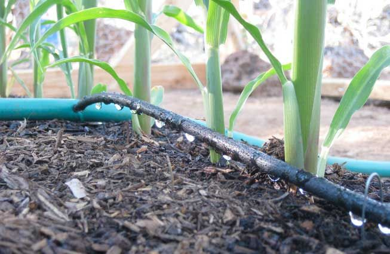

The Chief's Agritech Consultancy
Drip Irrigation
Drip irrigation is the most efficient method of irrigating. It is a micro-irrigation type that that saves water and nutrients by letting water to drip slowly to the roots of plants, either from above the soil surface or buried below the surface by placing water directly into the root zone.
Drip systems typically are 90% efficient or higher whereas sprinkler systems are around 75-85%. What that means is much less wasted water! For this reason drip is the preferred method of irrigation in the desert regions. But drip irrigation has other benefits which make it useful almost anywhere. It is easy to install, easy to design, can be very inexpensive, and can reduce disease problems associated with high levels of moisture on some plants.

Drip irrigation/trickle irrigation works by applying water slowly, directly to the soil. The high efficiency of drip irrigation results from two primary factors. The first is that the water soaks into the soil before it can evaporate or run off. The second is that the water is only applied where it is needed, (at the plant’s roots) rather than sprayed everywhere. While drip systems are simple and pretty forgiving of errors in design and installation, there are some guidelines that if followed, will make for a much better drip system. The purpose of this website is to guide you toward materials and methods that will increase the benefits of your new drip system, while steering you away from some common misconceptions and practices that can cause you trouble.Contact us.

Sprinklers
Sprinklers provide efficient coverage for small to large areas and are suitable for use on all types of properties. An Irrigation sprinkler is a device used to irrigate agricultural crops, lawns, landscapes, golf courses, and other areas. They are also used for cooling and for the control of airborne dust. Sprinkler irrigation is a method of applying irrigation water which is similar to natural rainfall. Water is distributed through a system of pipes then sprayed into the air through sprinklers so that it breaks up into small water drops which fall to the ground. The pump, valves, distribution pipes, and sprinklers are generally designed to apply water as uniformly as possible.
It is adaptable to nearly all irrigable soils since sprinklers are available in a wide range of discharge capacity. A good system should be designed to ensure maximum water saving, combining high quality, affordability and ease of installation. All the products should made out of high strength and chemical resistance engineering plastics to achieve functional satisfaction and to maintain cost economics. Moreover, performance of the products should also be tested in the field to ensure uniform water distribution and higher efficiency. Sprinkler irrigation is suitable for almost all field crops like Wheat, Gram, Pulses as well as Vegetables, Cotton, Soyabean, Tea, Coffee, and other fodder crops. It is also suitable for Residential, Industrial, Hotel, Resorts, Public and Government Enterprises, Golf Links, Race courses. sprinkler Types
Furrow Irrigation
Furrow Irrigation Furrow irrigation is a type of surface irrigation in which trenches or “furrows” are dug between crop rows in a field. Farmers flow water down the furrows (often using only gravity) and it seeps vertically and horizontally to refill the soil reservoir. Flow to each furrow is individually controlled. Furrow irrigation works well for row crops, tree crops and, because water does not directly contact the plants, crops that would be damaged by direct inundation by water such as tomatoes, vegetables, potatoes and beans. One of the oldest methods of irrigation, furrow irrigation is cheap and low-tech making it particularly attractive in the developing world or places where mechanized spray irrigation is unavailable or impractical.

One of the difficulties of furrow irrigation is ensuring uniform dispersion of water over a given field. In order to address this problem, some farmers engage in field leveling to remove any small hills that would have been bypassed by the gravity flow of the water. Additionally, some farmers employ a type of furrow irrigation known as “surge irrigation” in which water is pulsed on and off at given intervals. This wetting and drying of the soil can help “seal” the soil and encourage better water flow across the entire field instead of losing significant amounts of water to the areas of the field where the water is first pumped. Another difficulty with furrow irrigation is the increased potential for water loss due to runoff (although water loss to evaporation is less relative to mechanized spray irrigation). Building retention ponds along the edges of fields can help capture this runoff, allowing it to be pumped back to the upslope side of the field for use in further irrigation cycles.